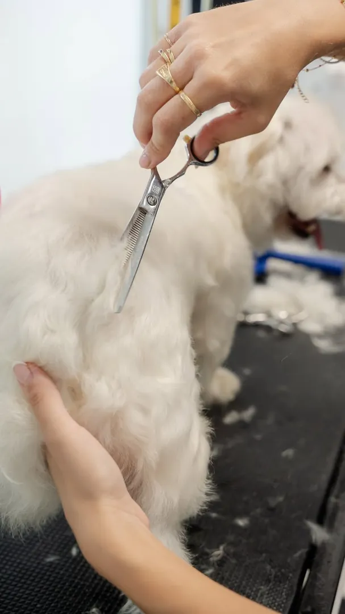

Un estilo propio
Siluetas e acabados adaptados a cada can.
Hai cortes que se ven bonitos. E cortes que, ademais, se viven cómodos. Atopamos o seu, tesoira a tesoira.

tesoira a tesoira ✂O corte comeza moito antes de coller as tesoiras: observamos o manto, falamos da vosa rutina e eliximos un acabado que poidas manter na casa. Shadia traballa as formas e os volumes con paciencia, adaptando o arranxo ao can que ten diante.
Podemos orientar o acabado cara ao estilo da súa raza ou buscar unha opción máis práctica. Se hai nós, primeiro valoramos como resolvelos sen comprometer a súa comodidade; conservar a lonxitude nunca está por riba do seu benestar.
Siluetas e acabados adaptados a cada can.
Lonxitudes compatibles cos vosos paseos e coidados.
Atención especial ao rostro, ás patas e ao acabado.

Cans cuxo manto admite un traballo a tesoira, como caniches, bichóns e outros mantos de crecemento continuo. Tamén para arranxos de contorno, sempre tras valorar o pelo e o seu estado.
Revisamos o pelo e comentamos o acabado desexado.
Baño, secado e preparación segundo as súas necesidades.
Corte progresivo, con pausas se as precisa.
Repasamos o resultado e a rutina entre visitas.
«Máis que un corte é amor e coidado.»
Preme para velo co reprodutor de Instagram. Non cargamos nada de Instagram ata que ti o decides.
Fotos de clientes de Pelucans. Preme para ampliar.


Si. Axúdanos a entender o estilo que che gusta. Explicarémosche que se pode adaptar ao seu tipo de pelo e ao mantemento que queiras facer.
Valoramos a súa proximidade á pel e a tolerancia do can. Se desenredalos supón tirós ou molestias, buscamos xuntos unha alternativa máis cómoda.
Depende do tamaño, a cantidade de pelo e o seu comportamento. Ao reservar orientámoste e reservamos o tempo que precisa, sen fixar unha duración igual para todos.
Cóntanos como é, que lle gusta e que precisa. Do resto encargámonos nós, con calma.